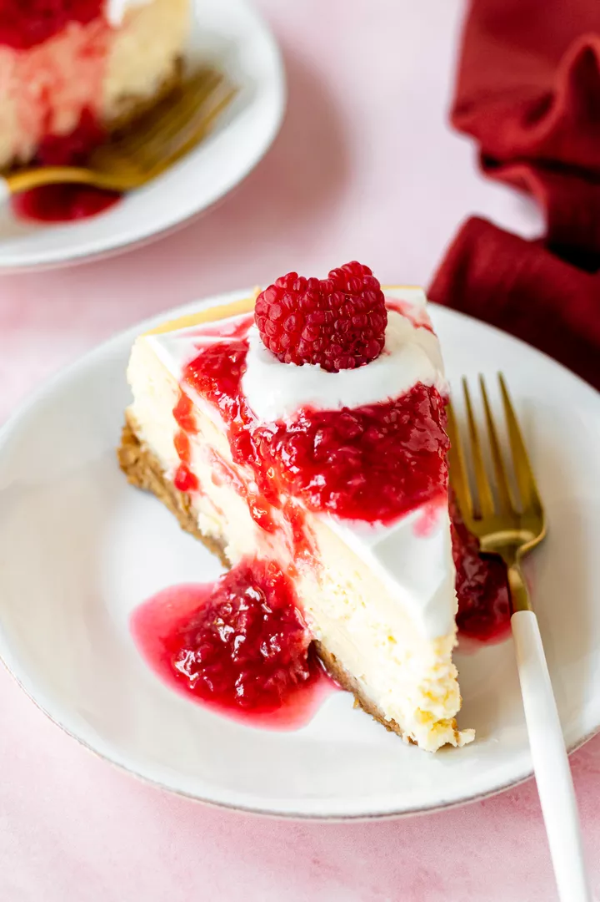

Cheesecake

Description
Cheesecake is probably my favorite cake. Here is a nice recipe for cheesecake.
This is simply the best, most wonderful cheesecake I have ever had, and have ever made. It is based on a master recipe, from the master of baking herself, Dorie Greenspan.
Ingredients
For the crust:
- 1 3/4 cups (230g) Graham cracker crumbs (from about 15 Graham crackers)
- 2 tablespoons sugar
- Pinch of salt
- 4 tablespoons plus 1 teaspoon (60g) unsalted butter (if using salted butter, omit the pinch of salt), melted
For the filling:
- 2 pounds (900g) cream cheese, at room temperature
- 1 1/3 cups (270g) sugar
- Pinch of salt
- 2 teaspoons vanilla extract
- 4 large eggs, at room temperature
- 2/3 cup (160ml) sour cream, at room temperature
- 2/3 cup (160ml) heavy cream
For the sour cream topping:
- 2 cups (475ml) sour cream
- 1/3 cup (35g) powdered sugar
- 1 teaspoon vanilla extract
For the raspberry sauce:
- 12 ounces (340g) fresh raspberries
- 1/2 cup (100g) sugar
- 1/2 cup (120ml) water
Steps
- Preheat oven to 350°F (175°C), with rack in lower third of oven.
- Pulse the graham crackers in a food processor or blender until finely ground. Put in a large bowl, and stir in the sugar and salt. Stir in the melted butter.
- Use a 9” x 2-3/4” round springform pan. Gently press down on the crumbs using your fingers, until the crumbs are a nice even layer at the bottom of the pan, with maybe just a slight rise along the inside edges of the pan.
- Place the pan on a baking sheet and bake at 350°F (175°C) for 10 minutes. Remove from the oven and let cool. Lower the oven temperature to 325°F (160°C). While the crust is cooling, you can skip ahead and start on the filling. Wait until the crust has cooled to wrap the pan in foil in the next step.
- Prepare the springform pan, so no water leaks into it while cooking. Place a large 18-inch by 18-inch square of heavy duty aluminum foil on a flat surface.
- Cut the cream cheese into chunks and place in the bowl of an electric mixer fitted with the paddle attachment. Mix on medium speed for 4 minutes until smooth, soft and creamy. Add the sugar and beat for 4 minutes more.
- Add salt, vanilla, then eggs, then sour cream
- Add the heavy cream and mix on low speed until incorporated.
- Place the foil-wrapped springform pan in a large, high-sided roasting pan. Prepare 2 quarts of boiling water.
- Pour the cream cheese filling into the springform pan, over the graham cracker bottom layer. Smooth the top with a rubber spatula.
- Place the roasting pan with the springform pan in it into the oven on the lower rack.
- Without touching the hot oven, carefully pour the hot water into the roasting pan to create a water bath for the cheesecake, pouring until the water reaches halfway up the side of the springform pan, about 1 1/4 inches. (Alternatively, you can add the water before putting the pan in the oven, whichever is easier for you.)
- Bake at 325°F (160°C) for 1 1/2 hours.
- Turn the oven off and crack open the oven door 1 inch. Let the cheesecake cool in the oven, as the oven cools for another hour. This gentle cooling will help prevent the cheesecake surface from cracking.
- Carefully cover the top of the cheesecake with foil, so it doesn't actually touch the cheesecake. Chill in the refrigerator for a minimum of 4 hours, or overnight.
- Place sour cream in a medium sized bowl. Add the powdered sugar and vanilla, and stir until smooth. Chill until you are ready to serve the cake.
- Place raspberries, sugar, and water in a small saucepan. Use a potato masher to mash the raspberries. Heat on medium, whisking, about 5 minutes, until the sauce begins to thicken. Remove from heat, and let cool.
- Remove the cheesecake from the refrigerator. Remove the foil from the sides of the pan, and place the cake on your cake serving dish. Run the side of a blunt knife between the edge of the cake and the pan.
- Spread the top with the sour cream mixture. Serve plain or drizzle individual slices with raspberry sauce or sauce of your choice.